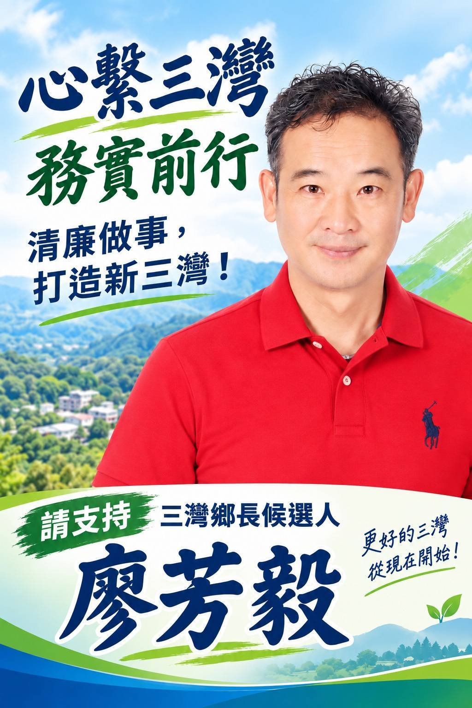
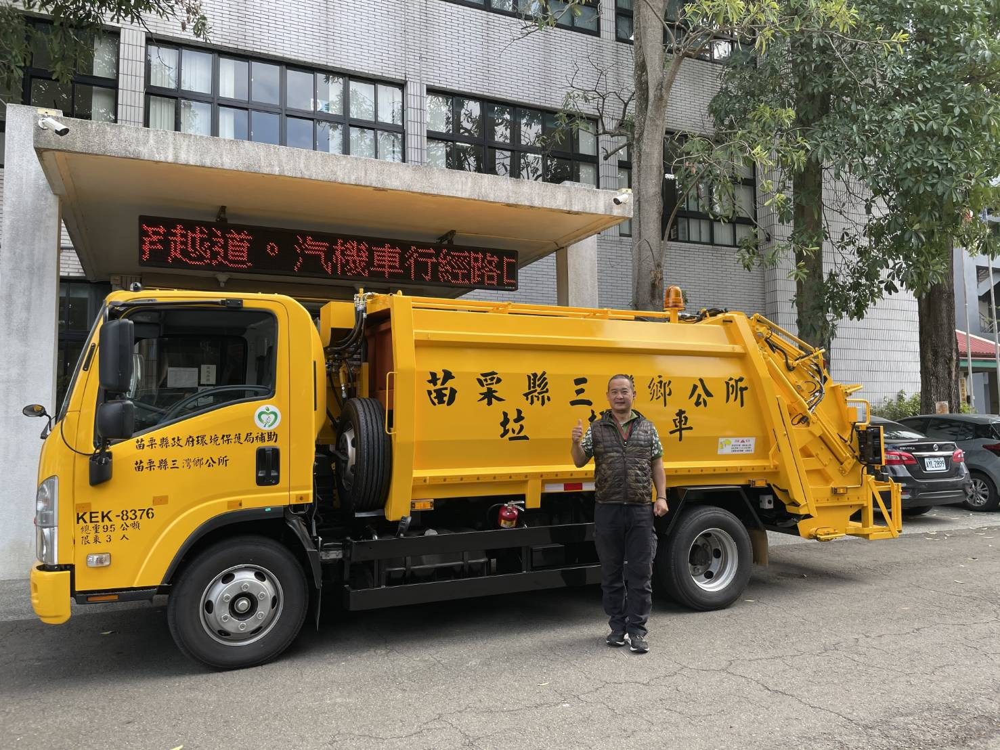
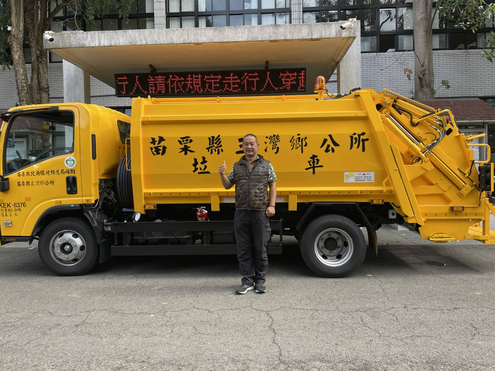
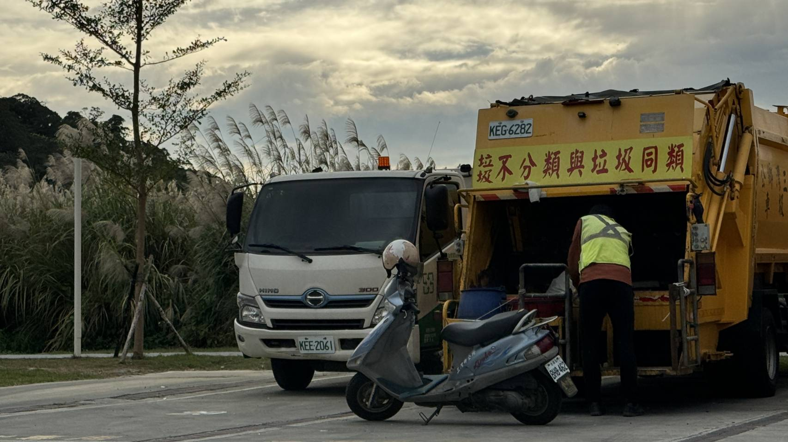

01
乾淨參選
堅持不買票、不賄選；政治獻金依法設立專戶、依法申報，接受鄉親檢驗。
從家鄉出發，也回到家鄉服務。把鄉親交付的每件小事放在心上，讓三灣一步一步，走向更安心、更宜居的未來。

我是廖芳毅，在三灣長大。從大河國小、三灣國中，到北上求學並投入警政、消防與行政工作；民國104年，因為父母的一聲牽掛，我選擇回到家鄉。
回來，不只是陪伴家人。我進入三灣鄉公所擔任清潔隊長，從最貼近鄉親日常的第一線重新開始。每一通陳情、每一處環境問題，看似平常，對正在等待協助的鄉親而言，都是眼前最重要的事。
這些經驗讓我更確定：地方治理，不是口號，而是願不願意走到現場、把問題弄清楚，再一件一件做到底。

堅持不買票、不賄選；政治獻金依法設立專戶、依法申報，接受鄉親檢驗。
重要建設、採購與計畫依法辦理，讓資源如何運用、進度走到哪裡，都清楚可查。
能做的積極去做；需要時間的說明進度；依法不能做的，也誠實向鄉親說清楚。
不只聽見意見，更要理解問題背後真正的需要。
遇到事情走到現場，掌握實際狀況，而不是只在辦公室判斷。
面對問題想辦法；做了決定，就對過程與結果負責。
我不會承諾所有問題都能立刻解決，但會承諾：每一件事情都有人聽、有人處理，也有人說明。
改善農水路與生產環境，協助三灣梨、柑橘等在地農產提升品牌價值與市場能見度。
建立青農與返鄉創業交流平台，串連資訊與資源，讓想回家的年輕人有機會留下。
串聯步道、農產、客庄文化與聚落特色，發展有內容的小旅行與在地消費。
持續推動社區共餐與長照資源，讓長輩獲得陪伴，也減輕家庭的照顧壓力。
爭取幸福巴士與聯外道路改善，讓就醫、通學及日常往返更安全、更便利。
守護乾淨環境、社區安全與便民服務，並持續推動完善且尊重的生命禮儀規劃。


三灣的事，放在心上。
鄉親的事，認真去做。